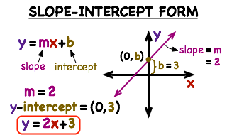
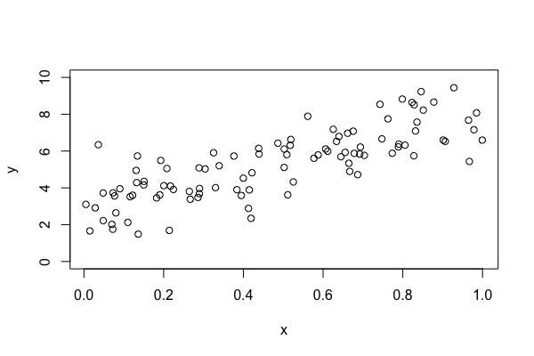
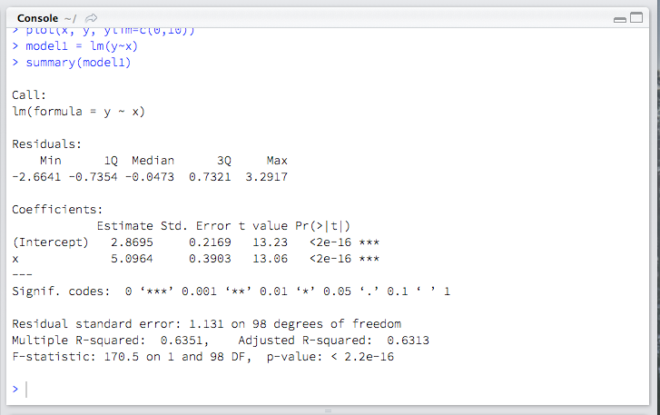
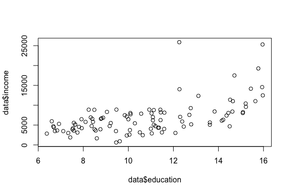
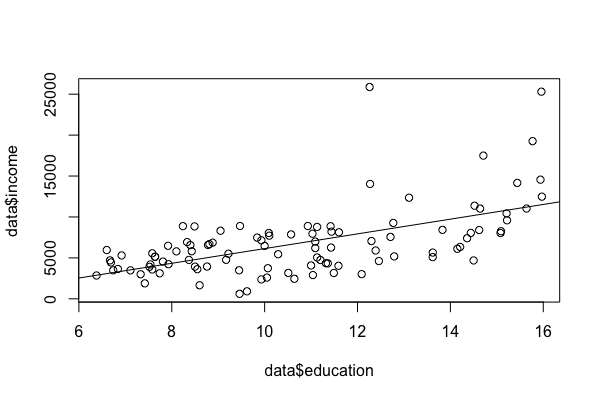
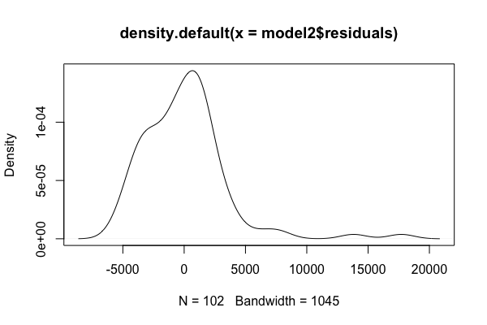
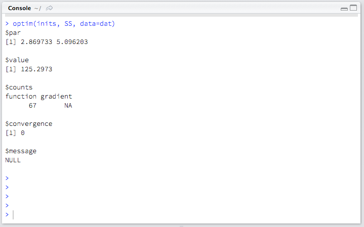
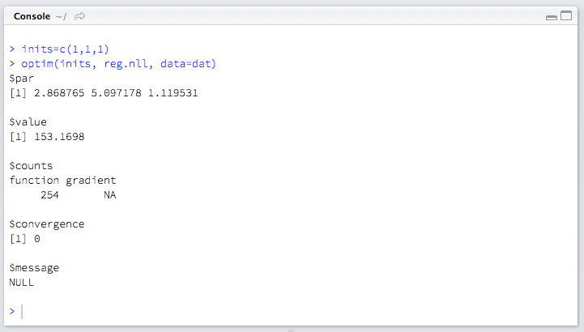

Week 7 lecture notes - PSYC 5316
Linear regression modeling
This week, we will talk about a classic technique in behavioral and social sciences: linear regression. After discussing what it is and how to do it (at its most basic form), we will step back and develop TWO techniques for linear regression: one based on minimizing squared errors, and another based on maximum likelihood estimation.
Linear equations
Recall from algebra that any line can be written as \(y=mx+b\), where \(m\) is the slope and \(b\) is the y-intercept.

In applied contexts, we usually write this equation as \(y=a+bx\).
What is a "linear model"?
To fit a "linear model" to data, we are making an assumption about the dependency between two variables. Lets generate some data to see what I'm talking about:
N = 100 x = runif(N) y = 3 + 5*x + rnorm(N) plot(x, y, ylim=c(0,10))

It looks like \(y\) varies linearly with \(x\)..that is, as \(x\) increases, so does \(y\), and the overall pattern looks like a straight line (with noise, of course).
So, we define the following model:
\[ y_i = a + bx_i + \varepsilon_i \]
Note the index \(i\) represents the different measurements in our sample \(x_i\) and \(y_i\) for \(i=1,\dots, n\), and \(\varepsilon_i\) represents the measurement error on the \(i^{\text{th}}\) measurement. These are sometimes called residuals.
Once we've defined the model, we need to find the parameters of the model: in other words, what are the values for intercept \(a\) and slope \(b\) that best fit the data.
Thus, "fitting a linear model" equates to a "parameter search", where we find the "best fitting" parameters for a given set of data. To see this in action, we will play around with a simple demo here https://www.geogebra.org/m/dlsxY1uX
This demo starts with a set of 5 points and a line. You can change the slope and intercept. You can also see the residuals (and the squared residuals). When playing around with this, you should think about what "best fit" would mean. How do you find the "best fit"? That is the subject for today's lecture.
Method 1: the "easy" way
This is an old problem, and as such, there are well-established methods for solving it. We will begin by using the base function lm in R to find the parameters that fit the data.
model1 = lm(y~x) summary(model1)

The output is quite busy, but there are ways to extract vital information from the model. First, let's plot the "best fitting line":
intercept = model1$coefficients[1] slope = model1$coefficients[2] abline(a=intercept, b=slope)
The first two lines "extract" the intercept (\(a\)) and slope (\(b\)) from the model1 object in R. The third line (abline) plots the line on top of our data!
Beyond "fitting" the data quite well, we can use this model for another very important function: prediction. For example, suppose we wanted to predict the value of \(y\) for a given \(x=0.5\). Then we can just use the linear equation from our model to predict our value for \(y\):
\begin{align*} y & = a + bx\\ & = 2.87 + 5.10x\\ & = 2.87 + 5.10(0.5)\\ & = 5.42\\ \end{align*}Lets look at the errors/residuals.
plot(density(model1$residuals))

Notice that the residuals seem to be normally distributed, centered at 0. This is good, as it means that, on average, the error in our model is 0, and over-estimates are balanced with under-estimates. This is generally regarded as a good fit.
Example with real data
The following data represents some properties of various professions. We will be interested in the relationship between education and income.
data = read.csv("https://git.io/vd2w3")
plot(data$education, data$income)

Lets fit a linear model:
model2 = lm(data$income ~ data$education) summary(model2) intercept = model2$coefficients[1] slope = model2$coefficients[2] abline(a=intercept, b=slope)

We can see that the line looks like a good fit, but lets look at the residuals.
plot(density(model2$residuals))

The residuals peak at 0 (so most of our measurement error is 0), but we seem to have more underestimates (positive residuals) than overestimates (negative residuals). Thus, this is not a great fit, but OK.
Method 2 – minimizing squared error
We will now talk about how to fit a linear regression model. The first method we will discuss is the classical "OLS" method (ordinary least squares). The basic idea is to compute errors between actual and predicted values, square them to get rid of negatives, and then find the parameters \(a\) and \(b\) which minimize this "squared error".
Mathematically, we want to find parameters \(a\) and \(b\) that minimize:
\[ \sum \varepsilon_i^2 = \sum (y_i - (a+bx_i))^2 \]
We can do this in R using the optim command.
First, we define a function that calculates the sum of squared errors:
SS = function(data,par){
with(data, sum((y-(par[1]+par[2]*x))^2))
}
As we did with maximum likelihood estimation in Week 2, this function takes two arguments: data and par. In this context, data will be a data frame with two columns (x and y), and par will be a vector containing our parameters \(a\) (par[1]) and \(b\) (par[2]).
To find \(a\) and \(b\) that minimize this sum-of-squares function, we will use optim with a reasonable guess for initial values:
dat=data.frame(x,y) inits=c(1,1) optim(inits, SS, data=dat)

As you might expect, our fitted parameters \(a\) and \(b\) are the same as we got when we used the lm function earlier.
Lets try this with our other example (the education versus salary data):
dat=data.frame(data$education, data$income)
names(dat) = c("x", "y")
inits=c(1,1)
optim(inits, SS, data=dat)
As you will see, the parameter estimates for \(a\) and \(b\) are almost exactly the same as we obtained with the lm command.
Method 3 – maximum likelihood estimation
Instead of minimizing the sum of squared errors, we can use maximum likelihood estimation. This requires a bit more sophistication in our definition of a linear model. So, lets start there.
Recall that for MLE, one needs a likelihood function. That is, we need some sort of distributional assumption to proceed (e.g., is something normally distributed)? Recall that in a linear model, we have
\[ y_i = a+bx_i + \varepsilon_i \]
or rewritten
\[ \varepsilon_i = y_i - (a+bx_i) \]
We want the residuals \(\varepsilon_i\) to be centered at 0. Thus, one way to do this is to place a normal model on the residuals. That is, we assume
\[ \varepsilon_i \sim \text{Normal}(0, \sigma^2) \]
So, this is a problem that MLE can solve! We simply need to find parameters \(a\) and \(b\) so that \(y_i-(a+bx_i)\) is normally distributed with mean 0 and variance \(\sigma^2\).
As in week 2, we begin by defining a negative log-likelihood (NLL) function:
reg.nll = function(data, par){
residual = with(data, y-(par[1]+par[2]*x))
return(sum(-log(dnorm(residual, mean=0, sd=par[3]))))
}
Then, we minimize this NLL via the optim function.
dat=data.frame(x,y) inits=c(3,5,2) optim(inits, reg.nll, data=dat)

Notice that we get the same estimates for \(a\) and \(b\) as before. This time, we also get an estimate for \(\sigma\), the standard deviation of the residual distribution.
Confidence intervals on parameter estimates
One of the advantages to the MLE approach is that there is a straightforward compute confidence intervals for our estimates. We need an estimate for the standard error of our MLE. This is given to us (quite indirectly) by the Hessian matrix, which is an output option for optim.
Intuitively, the standard error of the estimate is given by:
\[ SE = \sqrt{\frac{1}{\text{Hessian}}} \]
This is not exactly true, since in most cases the Hessian will be a matrix, and square roots and reciprocals are not exactly obvious in matrix arithmetic. However, if you are willing to assume some linear algebra "happens", the following R commands will give you a nice estimate for the standard error:
fit = optim(inits, reg.nll, data=dat, hessian = TRUE) hessian = fit$hessian inverse = solve(hessian) se = sqrt(diag(inverse))
Now, if we call se in the console, we'll see a vector with three numbers. These are the standard error estimates for \(a\), \(b\), and \(\sigma\), respectively.
> se [1] 0.21479319 0.38639248 0.07918032
Thus, we can construct 95% confidence intervals for the intercept \(a\):
\[ \Bigl(2.87 - 1.96(0.21), 2.87+1.96(0.21)\Bigr) = (2.45, 3.29) \]
as well as for the slope \(b\):
\[ \Bigl(5.10 - 1.96(0.39), 5.10+1.96(0.39)\Bigr) = (4.34, 5.86) \]